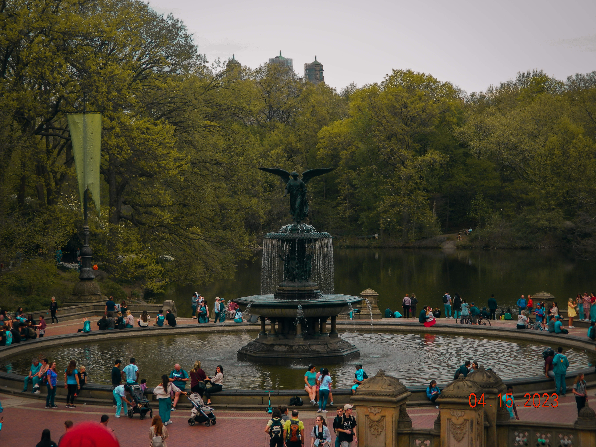
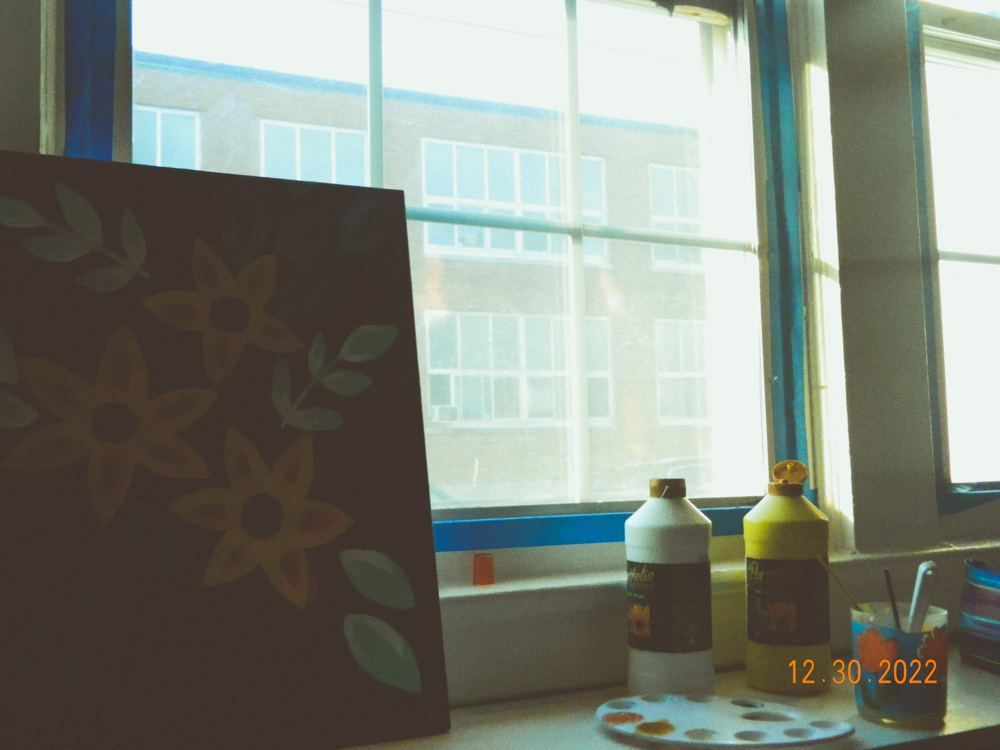

About Me
My name is Jeraldin and welcome to my website!! I grew up in Westchester and have always loved being able to admire the city life as well as the suburan areas. Admiring scenery and being outdoors has always been one of my favorite hobbies which is how I developed a love for photopgrahy. Photopraphy is my way of being able to treasure those speical moments that I wish I could go back to. I also love to film videos but enjoy photography even more. I will admitt that I enjoy scenery photography more than portrait photography becuase it feels more personal when I am photographing alone ina . beautiful place.
College Life
I am a sophomore in college and am currently in the process of getting my bachelor's degree in interactive digital media and marketing. I am learning how to use adobe software applications which will allow me to improve my editing and software skills. Many have asked me why I didn't pursue a photography career and this is becuase I didn't want photography to turn into homework and to lose my passion for it. Although many consider it a job I truly enjoy taking photographs. I have found the coursework in this career to be useful towards my photogrpahy editing skills and hope that at the end I will have improve in my skills.
Fun Facts
In my free time I also enjoy reading fiction romance as a way of destress. Although I dont read as much as I'd like to, I always have a book handy. I still have the first camera that I started with which is a Nikon Coolpix. I also really enjoy painting on my free time, although I am not super talented at it, it helps me clear my mind.
 